배우기 전에 먼저 해 보세요. 틀려도 괜찮아요.
Wenn es regnet, essen wir drinnen.은 무슨 뜻일까요?
wenn은 '~하면'이라는 조건을 말해요.
식당에서 계산하고 싶을 때 하는 말은 무엇일까요?
die Rechnung이 계산서예요.
A2.1 Angekommen · Lektion 5
초대와 식사
음성은 준비 중이에요. 듣기 단추와 받아쓰기는 음성이 올라오면 쓸 수 있어요. 그동안은 글을 읽으면서 공부해요.
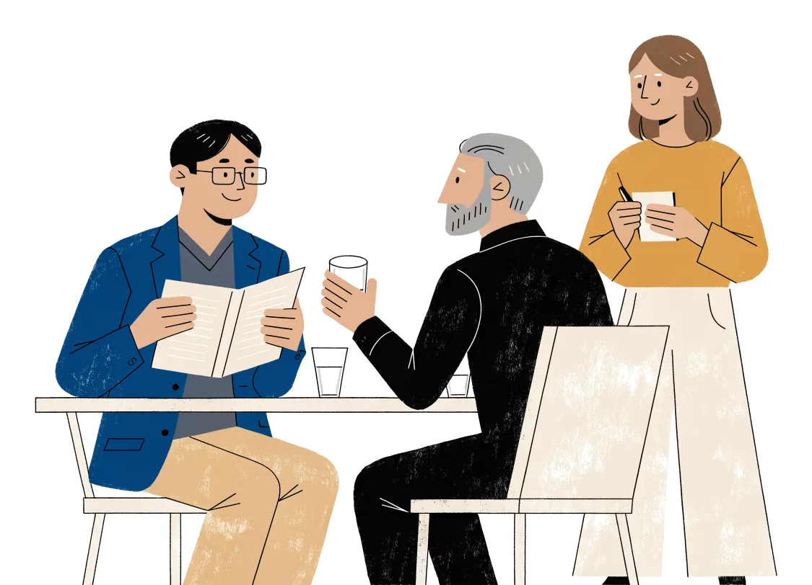
친구를 집에 불러 밥을 먹고, 손님과 식당에 가는 일은 독일에서도 사람을 사귀는 가장 좋은 방법이에요. 그럴 때는 초대하고, 예약하고, 주문하고, 음식이 어떤지 말해요. 이 과에서는 내 생각을 말하는 dass와 조건을 말하는 wenn을 배워요.
문법 dass-Sätze, wenn-Sätze, Dativ und Akkusativ im Satz (Ich schenke ihr Blumen)
과제대학학과 친구들을 저녁 식사에 초대하기
과제직장거래처 손님과 식당에서 식사하기
이 과를 마치면 식사에 초대하고 초대에 답하고, 식당을 예약하고 주문하고, 음식에 대해 말할 수 있어요.
이 과에서 쓸 말이에요.
배우기 전에 먼저 해 보세요. 틀려도 괜찮아요.
Wenn es regnet, essen wir drinnen.은 무슨 뜻일까요?
wenn은 '~하면'이라는 조건을 말해요.
식당에서 계산하고 싶을 때 하는 말은 무엇일까요?
die Rechnung이 계산서예요.
Lektion 4의 낱말 다섯 개를 다시 떠올려 보세요.
금요일 저녁, WG 부엌이에요. Jiu가 어학원 친구 Carlos와 Ewa를 집으로 초대하려고 해요.
들으면서 찾아보세요. Lena는 무엇을 만들기로 하나요?
목요일 저녁, 마인강 가의 식당이에요. Dohyun이 거래처의 Herr Schneider를 저녁 식사에 초대했어요.
들으면서 찾아보세요. 두 사람은 먼저 무엇을 먹나요?
화요일 오전이에요. Sora가 남편 Minho의 생일에 갈 식당에 전화해요.
들으면서 찾아보세요. Sora의 가족은 몇 시에 식당에 가나요?
세 대화를 듣고 답하세요.
Jiu는 토요일에 무엇을 만드나요?
Ewa hat schon geantwortet.
Ewa는 아직 답이 없어요.
Lena는 무엇을 만들기로 하나요?
Dohyun과 Herr Schneider는 먼저 무엇을 먹나요?
Herr Schneider trinkt Wein.
운전해야 해서 물을 마셔요.
계산은 누가 하나요?
Sora의 가족은 몇 시에 식당에 가나요?
Minho weiß, dass die Familie ins Restaurant geht.
깜짝 선물이라서 Minho는 몰라요.
낱말 48개예요. 명사는 der, die, das를 색으로 구분했어요.
der Besuch 방문, 찾아온 손님
Am Samstag haben wir Besuch.토요일에 손님이 와요.
vorbeikommen (ist vorbeigekommen) 들르다
Komm doch am Samstag vorbei!토요일에 들러요!
die Überraschung, die Überraschungen 깜짝 선물, 뜻밖의 일
Das ist eine Überraschung!이거 뜻밖이네요!
hoffen (hat gehofft) 바라다
Ich hoffe, dass du kommst.와 주면 좋겠어요.
mögen (ich mag, du magst, hat gemocht) 좋아하다
Magst du Fisch?생선 좋아해요?
schmecken (hat geschmeckt) 맛이 나다, 맛있다
Der Kuchen schmeckt sehr gut.케이크가 아주 맛있어요.
probieren (hat probiert) 맛보다, 해 보다
Möchtest du die Suppe probieren?수프 맛볼래요?
lecker 맛있는
Das Essen ist lecker.음식이 맛있어요.
scharf 매운
Ist das Essen scharf?음식이 매워요?
salzig 짠
Die Suppe ist zu salzig.수프가 너무 짜요.
satt 배부른
Danke, ich bin satt.고마워요, 배불러요.
vegetarisch 채식의, 고기를 넣지 않은
Ich esse vegetarisch.저는 채식을 해요.
das Gericht, die Gerichte 요리, 음식
Das Gericht kommt aus Korea.그 요리는 한국 음식이에요.
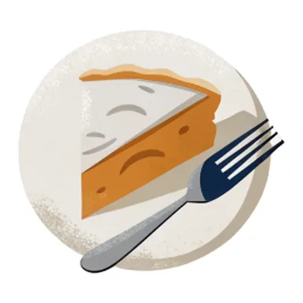
der Nachtisch 후식
Als Nachtisch gibt es Kuchen.후식으로 케이크가 있어요.
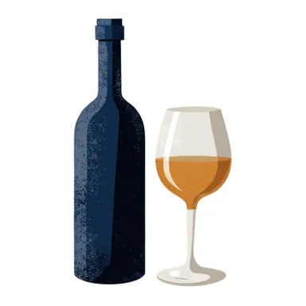
der Wein, die Weine 와인
Carlos bringt Wein mit.Carlos가 와인을 가져와요.
Guten Appetit! 맛있게 드세요!
Das Essen ist fertig. Guten Appetit!음식이 다 됐어요. 맛있게 드세요!
Prost! 건배!
Alle sagen: Prost!모두 건배라고 말해요.
das Restaurant, die Restaurants 식당
Das Restaurant ist am Main.그 식당은 마인강 가에 있어요.
reservieren (hat reserviert) 예약하다
Ich möchte einen Tisch reservieren.자리를 예약하고 싶어요.
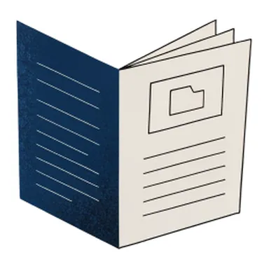
die Speisekarte, die Speisekarten 차림표
Ich bringe Ihnen die Speisekarte.차림표를 가져다드릴게요.
bestellen (hat bestellt) 주문하다
Möchten Sie bestellen?주문하시겠어요?
empfehlen (du empfiehlst, hat empfohlen) 추천하다
Was können Sie empfehlen?무엇을 추천해 주실 수 있나요?
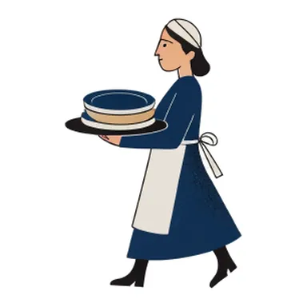
die Kellnerin, die Kellnerinnen 종업원 (여자)
Die Kellnerin bringt das Essen.종업원이 음식을 가져와요.
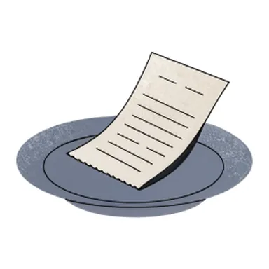
die Rechnung, die Rechnungen 계산서
Die Rechnung, bitte!계산서 주세요!
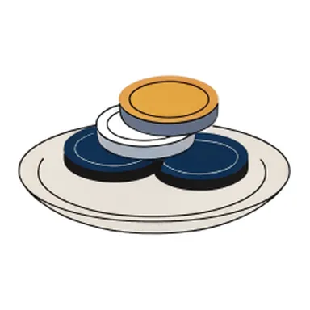
das Trinkgeld 팁
Ich gebe zwei Euro Trinkgeld.저는 팁으로 2유로를 줘요.
zusammen oder getrennt 같이 또는 따로
Zahlen Sie zusammen oder getrennt?같이 계산하세요, 따로 하세요?
Stimmt so. 잔돈은 됐어요.
Dreißig Euro. Stimmt so.30유로요. 잔돈은 됐어요.
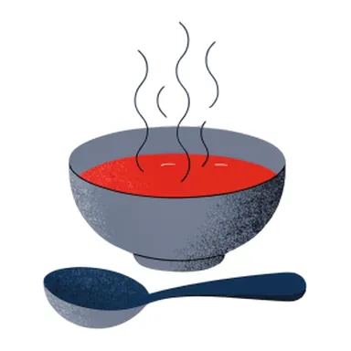
die Suppe, die Suppen 수프, 국
Die Tomatensuppe ist heiß.토마토 수프가 뜨거워요.
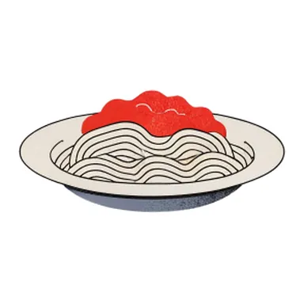
die Nudeln 국수, 파스타
Hana isst gern Nudeln.Hana는 파스타를 잘 먹어요.
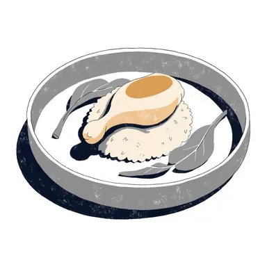
das Hähnchen, die Hähnchen 닭고기 요리
Ich nehme das Hähnchen mit Reis.저는 닭고기와 밥으로 할게요.
die Soße, die Soßen 소스
Die Soße ist scharf.소스가 매워요.
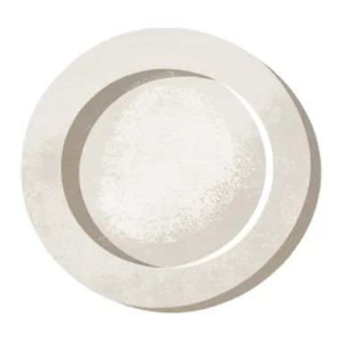
der Teller, die Teller 접시
Der Teller ist heiß.접시가 뜨거워요.
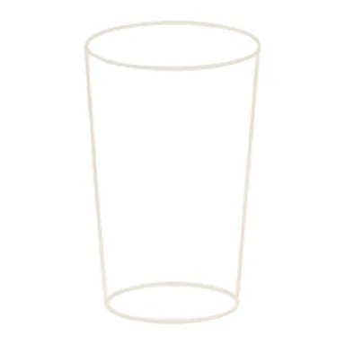
das Glas, die Gläser 유리잔
Ein Glas Wasser, bitte.물 한 잔 주세요.
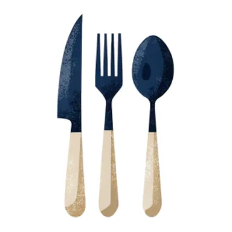
das Besteck 포크와 나이프, 숟가락
Das Besteck liegt neben dem Teller.포크와 나이프는 접시 옆에 있어요.
voll 꽉 찬
Am Sonntag ist das Restaurant voll.일요일에는 식당이 꽉 차요.
der Erwachsene, die Erwachsenen 어른
Zwei Erwachsene und ein Kind.어른 둘과 아이 하나예요.
dass ~라는 것, ~라고
Ich glaube, dass er kommt.그 사람이 올 것 같아요.
wenn ~하면, ~할 때
Wenn es regnet, essen wir drinnen.비가 오면 안에서 먹어요.
glauben (hat geglaubt) 생각하다, 믿다
Ich glaube, dass es schmeckt.맛있을 것 같아요.
meinen (hat gemeint) ~라고 생각하다, 뜻하다
Was meinst du?어떻게 생각해요?
denken (hat gedacht) 생각하다
Ich denke, dass wir reservieren sollten.예약하는 게 좋을 것 같아요.
antworten (hat geantwortet) 답하다
Ewa hat noch nicht geantwortet.Ewa는 아직 답하지 않았어요.
drinnen 안에서
Wir essen heute drinnen.오늘은 안에서 먹어요.
hoffentlich 바라건대, ~이면 좋겠다
Hoffentlich schmeckt es dir.입에 맞으면 좋겠어요.
sicher 틀림없이, 확실한
Carlos kommt sicher.Carlos는 틀림없이 와요.
klar 물론이죠, 분명한
Klar, ich helfe dir!물론이죠, 도와줄게요!
Es freut mich, dass … ~해서 기뻐요
Es freut mich, dass Sie Zeit haben.시간을 내 주셔서 기뻐요.
zweimal 두 번, (주문할 때) 둘
Zweimal die Suppe, bitte.수프 둘 주세요.
이 과의 낱말로 여덟 문제를 풀어요.
식사할 때와 계산할 때 자주 쓰는 말이에요.
규칙
glauben, finden, hoffen, wissen, sagen 뒤에 생각이나 들은 내용을 붙일 때 dass를 써요. weil 뒤와 같이 dass 뒤에서도 동사가 문장 맨 끝으로 가요. dass 앞에는 쉼표를 찍어요.
| 시작 | dass 문장 |
|---|---|
| Ich hoffe, | dass alle kommen. |
| Ich glaube, | dass sie Fisch mag. |
| Er sagt, | dass er Wein mitbringt. |
| Es freut mich, | dass Sie Zeit haben. |
주의 나뉘는 동사는 dass 문장 끝에서 다시 붙어요. Er sagt, dass er Wein mitbringt. dass와 das는 소리가 같지만 다른 말이에요. das는 관사나 '그것'이고, dass는 문장을 잇는 말이에요.
규칙을 보고 바로 확인해 보세요.
Ich glaube, dass Ewa kein Fleisch … 빈칸에 알맞은 말은 무엇인가요?
규칙
wenn은 '~하면'이라는 조건을 말해요. wenn 문장에서도 동사는 맨 끝에 와요. wenn 문장이 앞에 오면 쉼표 뒤의 문장은 동사로 시작해요.
| wenn 문장 | 동사 | 나머지 |
|---|---|---|
| Wenn es regnet, | essen | wir drinnen. |
| Wenn du Zeit hast, | kannst | du mir helfen. |
| Wenn Sie möchten, | bestelle | ich für Sie. |
주의 wenn과 wann을 헷갈리지 마세요. wann은 '언제'를 묻는 말이고 wenn은 조건을 말해요. Wann kommst du? Wenn ich Zeit habe, komme ich. '~할 때마다'라는 뜻으로도 wenn을 써요. Wenn ich koche, höre ich Musik.
규칙을 보고 바로 확인해 보세요.
Wenn es regnet, … drinnen. 빈칸에 알맞은 말은 무엇인가요?
규칙
geben, schenken, bringen, zeigen, empfehlen, schicken, leihen 같은 동사는 받는 사람과 주는 물건을 함께 써요. 받는 사람은 Dativ, 물건은 Akkusativ예요. 보통 사람을 먼저, 물건을 뒤에 말해요.
| 동사까지 | 누구에게 | 무엇을 |
|---|---|---|
| Ich schenke | ihr | Blumen. |
| Sie bringt | uns | die Karte. |
| Ich empfehle | Ihnen | den Fisch. |
| Er zeigt | dem Gast | den Tisch. |
주의 Dativ에서 der와 das는 dem, die는 der가 돼요. mein도 같아요. Ich schenke meinem Freund ein Buch. Ich schenke meiner Freundin Blumen. 누구에게인지 물을 때는 Wem?이라고 해요. Wem schenkst du die Blumen?
규칙을 보고 바로 확인해 보세요.
Die Kellnerin bringt … die Rechnung. 빈칸에 알맞은 말은 무엇인가요?
듣고 알맞은 것을 고르세요.
Lena는 무엇을 바라나요?
Ich hoffe, dass Ewa am Samstag Zeit hat.
고기를 안 먹는 손님이 오면 Jiu는 어떻게 하나요?
Wenn du kein Fleisch isst, mache ich etwas mit Tofu.
Dohyun은 무엇을 부탁하나요?
Bringen Sie uns bitte die Rechnung.
Sora는 몇 사람 자리를 예약하나요?
Einen Tisch für drei Personen, am Sonntag um zwölf Uhr.
Ewa가 Jiu에게 음성 메시지를 남겼어요. 듣고 알맞은 것을 고르세요.
Eine Nachricht von Ewa
Ewa Hallo Jiu, hier ist Ewa. Vielen Dank für die Einladung!
Ewa Ich komme sehr gern am Samstag. Aber ich muss dir sagen, dass ich kein Fleisch esse.
Ewa Ist das ein Problem? Wenn du möchtest, bringe ich einen Salat mit.
Ewa Ich komme ein bisschen später, um halb acht, weil ich bis sieben arbeiten muss.
Ewa Ich freue mich schon. Bis Samstag!
Ewa는 토요일에 오나요?
Was isst Ewa nicht?
Wann kommt Ewa?
식당의 차림표예요. 읽고 알맞은 것을 고르세요.
Speisekarte
| Gericht | Preis |
|---|---|
| Tomatensuppe | 5,50 € |
| Salat mit Käse | 7,90 € |
| Hähnchen mit Reis | 14,50 € |
| Fisch mit Kartoffeln | 17,90 € |
| Nudeln mit Tomatensoße | 11,50 € |
| Apfelkuchen | 4,90 € |
| Wasser | 3,90 € |
| Apfelsaft | 3,50 € |
| Wein | 6,50 € |
고기나 생선이 들어가지 않은 주요리는 무엇인가요?
Was kostet die Tomatensuppe?
Der Fisch kostet 17,90 Euro.
Es gibt keinen Nachtisch.
후식으로 사과 케이크가 있어요.
토마토 수프 둘, 생선 하나, 닭고기 하나를 주문했어요. 음식값은 모두 얼마인가요?
5,50유로가 둘, 17,90유로, 14,50유로를 더해요.
dass 문장이에요. 끝에 올 알맞은 동사를 고르세요.
Ich hoffe, dass alle .
모두 오면 좋겠어요.
Carlos sagt, dass er Wein .
Carlos는 와인을 가져온다고 해요.
Ich glaube, dass Ewa kein Fleisch .
Ewa는 고기를 안 먹는 것 같아요.
Es freut mich, dass Sie Zeit .
시간을 내 주셔서 기뻐요.
Ich finde, dass die Suppe gut .
저는 수프가 맛있다고 생각해요.
문장을 잇는 알맞은 말을 고르세요.
Ich glaube, Carlos gern scharf isst.
Carlos는 매운 걸 잘 먹는 것 같아요.
es regnet, essen wir drinnen.
비가 오면 안에서 먹어요.
Ich weiß nicht, Ewa Fleisch isst.
Ewa가 고기를 먹는지 모르겠어요.
Es freut mich, Sie Zeit haben.
시간을 내 주셔서 기뻐요.
du möchtest, bringe ich einen Salat mit.
원하면 샐러드를 가져갈게요.
Ewa kommt später, sie arbeiten muss.
Ewa는 일해야 해서 늦게 와요.
누구에게 무엇을 주나요? 알맞은 말을 고르세요.
Ich schenke Freundin Blumen.
저는 여자 친구에게 꽃을 선물해요.
Die Kellnerin bringt Gast die Speisekarte.
종업원이 손님에게 차림표를 가져다줘요.
Ich empfehle den Fisch.
생선을 추천해 드려요.
Kannst du das Rezept geben?
그 요리법을 저한테 줄 수 있어요?
Dohyun zeigt Gast das Restaurant.
Dohyun이 손님에게 식당을 보여 줘요.
Lena macht einen Nachtisch.
Lena가 우리에게 후식을 만들어 줘요.
낱말을 순서대로 눌러 문장을 만드세요.
모두 오면 좋겠어요.
비가 오면 안에서 먹어요.
종업원이 우리에게 차림표를 가져다줘요.
음식이 맛있을 것 같아요.
저는 그 사람에게 꽃을 선물해요.
식당에서 듣는 말과 알맞은 답을 짝지으세요.
빈칸에 알맞은 낱말을 쓰세요.
Die Suppe sehr gut.
수프가 아주 맛있어요.
Ich möchte einen Tisch .
자리를 예약하고 싶어요.
Die , bitte!
계산서 주세요!
Danke, ich bin .
고마워요, 배불러요.
듣고 그대로 써 보세요.
음성 준비 중Ich hoffe, dass alle kommen. 모두 오면 좋겠어요.
음성 준비 중Die Rechnung, bitte. 계산서 주세요.
음성 준비 중Ich möchte einen Tisch reservieren. 자리를 예약하고 싶어요.
Ich möchte dich zum Essen einladen. 식사에 초대하고 싶어요.
Hast du am Samstag Zeit? 토요일에 시간 있어요?
Komm doch um sieben vorbei! 7시에 와요!
Ich hoffe, dass du kommst. 와 주면 좋겠어요.
Danke für die Einladung! Ich komme gern. 초대해 줘서 고마워요! 기꺼이 갈게요.
Soll ich etwas mitbringen? 뭘 가져갈까요?
Ich esse kein Fleisch. Ist das ein Problem? 저는 고기를 안 먹어요. 괜찮을까요?
Leider kann ich nicht kommen. 아쉽지만 못 가요.
Ich möchte einen Tisch reservieren. 자리를 예약하고 싶어요.
Für vier Personen, am Freitag um sieben. 금요일 7시에 네 사람이에요.
Haben Sie einen Tisch am Fenster? 창가 자리가 있나요?
Auf den Namen Park. Park이라는 이름으로요.
Die Speisekarte, bitte. 차림표 주세요.
Was können Sie empfehlen? 무엇을 추천해 주실 수 있나요?
Ich nehme das Hähnchen mit Reis. 저는 닭고기와 밥으로 할게요.
Für mich bitte ein Wasser. 저는 물로 주세요.
Es schmeckt sehr gut. 아주 맛있어요.
Das ist ein bisschen scharf. 조금 매워요.
Ich finde, dass der Fisch lecker ist. 저는 생선이 맛있다고 생각해요.
Danke, ich bin satt. 고마워요, 배불러요.
Die Rechnung, bitte. 계산서 주세요.
Zusammen, bitte. 같이 계산할게요.
Ich lade Sie ein. 제가 대접하겠습니다.
Stimmt so. 잔돈은 됐어요.
과제 고르기
역할 대화와 말하기, 쓰기 과제는 대학 생활과 직장 생활 두 가지예요. 하나를 고르면 다음 과에서도 그쪽 과제가 나와요. 언제든 바꿀 수 있어요.
대화 A에서 역할을 하나 고르세요. 상대의 말은 글로 읽고, 내 차례에는 직접 말해요.
대화 B에서 역할을 하나 고르세요. 상대의 말은 글로 읽고, 내 차례에는 직접 말해요.
내가 좋아하는 음식을 떠올리고 칸을 채우세요. 완성된 문장을 소리 내어 읽어 보세요.
Ich esse sehr gern Bibimbap.
Ich finde, dass es ein bisschen scharf schmeckt.
Ich esse nicht gern Fisch.
Wenn Gäste kommen, koche ich Nudeln mit Gemüse.
토요일 저녁에 학과 친구 네 명을 집으로 초대하려고 해요. 한국 음식을 만들 거예요. 같은 수업을 듣는 Lena가 이것저것 물어요.
토요일 저녁 7시, 우리 집이에요. 음식은 비빔밥이에요. 밥에 채소와 달걀을 얹은 음식이고 조금 매워요. 고기는 넣지 않아도 돼요. 손님은 마실 것만 가져오면 돼요.
학과 친구 Lena가 저녁 초대에 대해 물어요. 쪽지를 보고 답하세요. 질문을 듣고 소리 내어 답한 뒤 예시 답과 비교해 보세요.
Du machst am Samstag ein Essen? Wann denn? 토요일에 식사 모임을 한다면서요? 몇 시예요?
Ja! Am Samstag um sieben Uhr bei mir zu Hause. Ich hoffe, dass du kommst.
Gern! Was kochst du? 좋아요! 뭘 만들어요?
Ich koche Bibimbap. Das ist Reis mit Gemüse und Ei.
Ist das scharf? Und ist Fleisch dabei? 매워요? 그리고 고기가 들어가요?
Es ist ein bisschen scharf. Wenn du kein Fleisch isst, ist das kein Problem.
Soll ich etwas mitbringen? 뭘 가져갈까요?
Wenn du möchtest, bring bitte etwas zu trinken mit.
Wie viele Personen kommen? 몇 사람이 와요?
Ich habe vier Personen eingeladen. Ich glaube, dass alle kommen.
Eine Einladung zum Abendessen
학과 친구들에게 저녁 식사 초대 메시지를 써 보세요. 여섯 문장이면 충분해요.
Hallo zusammen, ich möchte euch am Samstag um 19 Uhr zum Abendessen einladen. Wir essen bei mir zu Hause, im Beispielweg 7. Ich koche Bibimbap, das ist Reis mit Gemüse und Ei. Schreibt mir bitte, wenn ihr kein Fleisch esst. Wenn ihr möchtet, könnt ihr etwas zu trinken mitbringen. Ich hoffe, dass alle Zeit haben. Antwortet mir bitte bis Mittwoch. Viele Grüße, Minji
다 쓴 뒤에 확인해 보세요.
거래처의 Frau Sommer가 회사에 왔어요. 회의가 끝나고 저녁에 식당에서 대접해요. 식당에 도착해서 Frau Sommer와 이야기해요.
자리는 내 이름으로 예약했어요. 이 식당은 생선이 맛있다고 동료들이 말했어요. 나는 닭고기를 먹고 물을 마실 거예요. 식사가 끝나면 내가 계산해요.
식당에서 손님 Frau Sommer가 말해요. 쪽지를 보고 답하세요. 질문을 듣고 소리 내어 답한 뒤 예시 답과 비교해 보세요.
Vielen Dank für die Einladung. Das Restaurant ist sehr schön. 초대해 주셔서 감사합니다. 식당이 참 좋네요.
Es freut mich, dass Sie heute Zeit haben, Frau Sommer.
Waren Sie schon einmal hier? 여기 와 보신 적 있으세요?
Ja, einmal. Meine Kollegen sagen, dass der Fisch hier sehr gut ist.
Dann nehme ich den Fisch. Und Sie? 그럼 저는 생선으로 할게요. 무엇을 드세요?
Ich nehme das Hähnchen. Wenn Sie möchten, bestellen wir zuerst eine Suppe.
Gern. Was trinken Sie? 좋아요. 뭘 마시세요?
Ich nehme ein Wasser. Möchten Sie ein Glas Wein?
Das Essen war sehr gut. Zahlen wir getrennt? 음식이 아주 좋았어요. 따로 계산할까요?
Nein, Frau Sommer. Ich lade Sie ein.
Eine E-Mail an Frau Sommer
식사 약속을 알리는 메일을 Frau Sommer에게 써 보세요. 다섯 문장이면 충분해요.
Sehr geehrte Frau Sommer, es freut mich, dass Sie am Donnerstag zu uns kommen. Nach der Besprechung möchte ich Sie gern zum Abendessen einladen. Ich habe für 19 Uhr einen Tisch in einem Restaurant am Main reserviert. Können Sie mir sagen, ob Sie Fisch und Fleisch essen? Wenn Sie etwas nicht essen, schreiben Sie es mir bitte. Mit freundlichen Grüßen, Minji Choi
다 쓴 뒤에 확인해 보세요.
Ich kann jemanden zum Essen einladen und auf eine Einladung antworten.식사에 초대하고 초대에 답할 수 있어요.
Ich kann einen Tisch reservieren, bestellen und zahlen.자리를 예약하고, 주문하고, 계산할 수 있어요.
Ich kann sagen, wie das Essen schmeckt.음식 맛이 어떤지 말할 수 있어요.
Ich kann Sätze mit dass und wenn bilden.dass와 wenn으로 문장을 만들 수 있어요.